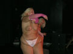
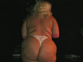

Kezdjük a levrovot a Seggkulacsenkó Halas Zsigmond (?) által beküldött verssel. Igen, ez a neve, a kérdõjelet is beleértve. Persze én tudom, hogy kicsoda valójában, de nektek nem kell tudnotok.
Szarosbaszós ballada
Faluvégén áll a bál,
Egymást tossza Péter s Pál.
Jegyzõ szólja elég már!
De nem hallja Péter s Pál.
Buzibár ez? - kérdezik,
Többen a kaszát élezik,
Kések, fejszék, hokedlik,
A sok szempár vérben fürdik.
Tombol a bosszú, elvégre
Pálnak a toszás nincs ínyére!
Péter volt a hunyó, a rossz nebuló
S Pál lett az áldozat, a végsõ befutó.
Szegény Paja!
Fáj a valaga.
Péternek széles a mosolya,
Meredezik szaros a farka.
De az istenadta falunépe!
Tüzes leánya! Erõs legénye!
Nyomul a pajtába, be a buzibárba
Péter ideiglenes kínzókamrájába!
Pál! Szabad vagy! hallatszik többfelöl,
S egyre több Péter arcában az ököl,
Most majd mi szórakozunk te buzi ökör!
S fejére kerül egy szaros vödör.
Péter megdöbben, nem várt fordulat ez,
A sok szartól fulladzik, nehezen lélegez,
De a bosszú elér a végéhez:
Pétert elvezetik, egyenest a vécéhez!
Ott belökik a lyukba, bele a mocsokba,
Barnálló-bûzös fossal teli katlanba.
Elmerül Péter a buzeráns majomka,
Kövekkel takarják el, azt rakják halomba.
Pál megmenekült, de megérte, tényleg?
Megszenvedte õ ezt? - a sok szempár kérdez.
Segge nem is vérzik - vazelintól fényes,
Arcán sátáni mosoly, gyanúsan széles!
Õ volt a disznó! õ a seggbebaszó!
Csak így álcázta magát a gaz csábító!
Hamis volt a sikoly, a remegés a zokszó,
Pál nem volt más, csak népharagszító!
De eljött az igazság perce!
Ismét elõkerül a sok fényes fejsze,
Letört nyakú palack, fényes penge,
S ez mind belemegy Pál végbelébe...
Most pedig közkívánat következik, ami így hangzik:
Hello! Vannak fotoid a scene-szerü esemény sztriptizérõl?? Mind2 nõre kiváncsi lennék.
Ezt többen is kértétek, hát nesztek, kaptok képet. Aki hány, lassan tegye.


Hmm, milyen igényes lett a mai levrov...